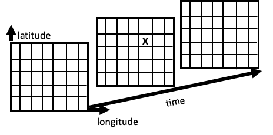
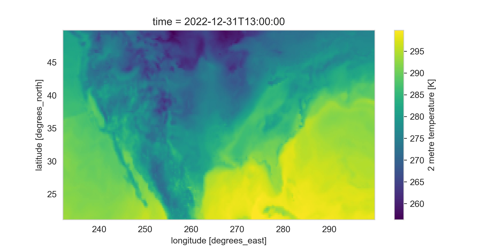
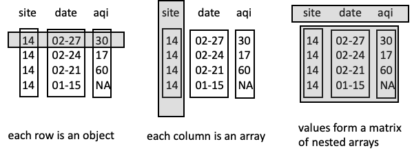

10. 数据交换 (Data Exchange)
我们在此前章节中专注于纯文本的分隔格式（如 CSV, TSV）和固定宽度格式（FWF）。但在实际的数据科学工作中，数据存储和交换的格式远不止这些。
本章将扩展视野，介绍其他几种流行的文件格式和数据获取方式。 虽然 CSV 等格式非常适合将数据组织成 DataFrame，但其他格式在节省空间或表示复杂结构方面可能更具优势。
1. 常见数据格式概览
1.1 二进制格式 (Binary Formats)
二进制格式并非纯文本，因此通常比纯文本数据源更节省空间，读写效率更高。
- NetCDF (Network Common Data Form)：一种用于交换大量科学数据（如气象、地理数据）的流行二进制格式。
1.2 结构化纯文本格式
除了扁平的表格数据，我们还需要处理具有层级或嵌套结构的数据。
- JSON (JavaScript Object Notation)：一种轻量级的数据交换格式，易于人阅读和编写，同时也易于机器解析和生成。
- XML (eXtensible Markup Language)：一种标记语言，用于定义文档的编码规则。
- HTML (HyperText Markup Language)：网页的标准标记语言。虽然主要用于展示，但往往包含可供抓取和分析的有价值数据。
2. 网络数据获取 (Acquiring Data Online)
过去，数据科学家可能需要物理移动磁盘来共享数据。现在，我们可以通过互联网自由地检索全球的数据集。为了实现可复现 (Reproducible) 的数据获取，我们需要了解一些网络技术：
- HTTP (Hypertext Transfer Protocol)：Web 的主要通信协议。
- REST (Representational State Transfer)：一种用于数据传输的软件架构风格，常用于 API 设计。
3. 提取工具
针对 XML 和 HTML 这种层级结构的数据，我们需要专门的工具来提取内容。
- XPath：一种在 XML 文档中查找信息的语言，也常用于 HTML 解析。
本章将从 NetCDF 开始，接着介绍 JSON，然后概述用于数据交换的 Web 协议，最后以 XML、HTML 和 XPath 结束。掌握这些技术将帮助我们更好地利用 Web 作为数据源。
4. NetCDF 数据
NetCDF (Network Common Data Form) 是一种用于存储面向数组的科学数据的高效格式，特别适合气象学、海洋学等领域。
4.1 核心概念：多维网格 (Multidimensional Grid)
可以将 NetCDF 中的变量想象为一个多维立方体。
- 例如：记录全球降雨量。
- 维度：经度 (Longitude)、纬度 (Latitude)、时间 (Time)。
- 网格单元：立方体中的每个单元格存储特定地点在特定日期的降雨量。
相比于 CSV 等格式，NetCDF 不需要重复存储每个测量点的经纬度和时间信息，因此大大节省了空间。

4.2 主要优势
- 可扩展 (Scalable)：高效访问大型数据集的子集。
- 可追加 (Appendable)：无需重定义结构即可追加新数据。
- 可共享 (Sharable)：跨平台、跨语言的通用格式。
- 自描述 (Self-describing)：文件本身包含数据组织的描述（元数据）。
注意：NetCDF 是二进制格式，无法直接用文本编辑器打开，需要专用工具（如 Python 的
xarray或netCDF4库）读取。
4.3 文件组件
一个 NetCDF 文件通常包含三个基本部分：
- 维度 (Dimensions)：定义轴的大小（如经度 1440 个点）。
- 变量 (Variables)：实际的数据数组（如降雨量、温度）。变量具有形状（Shape）和类型。
- 属性/元数据 (Attributes/Metadata)：
- 变量属性：单位（如
m）、长描述。 - 全局属性：数据来源、发布者、历史记录等，对可复现性至关重要。
- 变量属性：单位（如
4.4 Python 实战：使用 xarray 处理 NetCDF
我们以一个包含温度和降水量的气候数据集（CDS_ERA5_22-12.nc）为例。
加载与查看数据
import xarray as xr
ds = xr.open_dataset('data/CDS_ERA5_22-12.nc')
# 查看维度
print(ds.dims)
# 输出: {'longitude': 1440, 'latitude': 721, 'time': 408}
# 查看坐标 (Coordinates)
print(ds.coords)
# 包含 longitude, latitude, time 的具体数值数组
# 查看数据变量
print(ds.data_vars)
# 输出: t2m (温度), tp (总降水), lsrr 等
数据切片与可视化
xarray 提供了类似于 pandas 的选择功能，但针对多维数组进行了优化。
-
时间序列图：选择特定经纬度，绘制降水随时间变化的曲线。
(ds.sel(latitude=37.75, longitude=237.5).tp * 100).plot() -
地理分布图：选择特定时间点和地理范围，绘制温度分布的热力图。
# 选择 2022-12-31 13:00，并限定在美国范围 ds_oneday_us = ds.sel(time='2022-12-31T13:00:00')\ .where((ds.longitude > 232) & (ds.longitude < 300) & (ds.latitude > 21) & (ds.latitude < 50), drop=True) # 绘制温度图 ds_oneday_us.t2m.plot()
生态系统：除了 xarray，Python 还有 netCDF4、gdal 等库可以读取 NetCDF，可视化方面可以使用 matplotlib, cartopy 等。
5. JSON 数据 (JSON Data)
JSON (JavaScript Object Notation) 是一种轻量级的数据交换格式。它语法简单、灵活，非常契合 Python 的字典结构，既便于机器解析也便于人类阅读。
5.1 核心结构
JSON 由两种主要结构组成，可以互相嵌套：
- 对象 (Object)：无序的键值对集合，类似于 Python 的
dict。- 格式：
{"name": value, ...}
- 格式：
- 数组 (Array)：有序的值集合，类似于 Python 的
list。- 格式：
[value1, value2, ...]
- 格式：
数据类型：
* 字符串 (Double-quoted string)
* 数字 (Number)
* 布尔值 (true, false)
* 空值 (null)
示例：
{
"lender_id": "matt",
"loan_count": 23,
"status": [2, 1, 3],
"sponsored": false,
"sponsor_name": null,
"lender_dem": {"sex": "m", "age": 77}
}
5.2 Python 处理 JSON
Python 内置的 json 库可以轻松处理 JSON 数据。
import json
# 加载 JSON 文件为 Python 字典
data = json.load(open('data/ex.json'))
对于嵌套较深的半结构化数据，pandas 提供了 json_normalize 方法将其展平为表格：
import pandas as pd
df = pd.json_normalize(data)
# 结果会将嵌套字段转换为点分列名，如 lender_dem.sex
5.3 JSON 组织 DataFrame 的三种常见方式
由于 JSON 的灵活性，即使是同一个表格数据，也可以用多种不同的 JSON 结构来表示。理解这些结构对于正确读取数据至关重要。

-
按行组织 (Row-oriented)：
- 结构：对象列表，每个对象代表一行。
- 示例：
[{"site": "0014", "aqi": 30}, {"site": "0014", "aqi": 17}] - 读取：
pd.DataFrame(data)
-
按列组织 (Column-oriented)：
- 结构：包含列数组的对象。
- 示例：
{"site": ["0014", "0014"], "aqi": [30, 17]} - 读取：
pd.read_json(path)通常能直接处理这种格式。
-
矩阵式 (Matrix/Values-oriented)：
- 结构：将表头和数据分开存储。
- 示例：
{"columns": ["site", "aqi"], "data": [["0014", 30], ["0014", 17]]} - 读取：需要分别提取列名和数据，
pd.DataFrame(data['data'], columns=data['columns'])
总结：JSON 是 Web 数据交换的标准。由于其结构的灵活性，在将其转换为 DataFrame 之前，通常需要先检查文件的组织方式。接下来我们将介绍如何通过 HTTP 协议自动从 Web 获取这些数据。
6. HTTP 协议
HTTP (HyperText Transfer Protocol) 是访问 Web 资源的基础设施。通过 HTTP，我们可以利用 Python 自动化地从互联网海量数据集中获取数据。
6.1 基本概念
HTTP 是一种简单的请求-响应 (Request-Response) 协议：客户端（如浏览器或 Python 脚本）发送格式化的文本请求，服务器返回格式化的文本响应。
请求结构：
- 起始行：包含方法（如
GET）、URL 和协议版本。 - 头部 (Header)：键值对，提供辅助信息（如
User-Agent）。 - 空行。
- 主体 (Body)：可选，用于 POST 请求等。
响应结构：
- 状态行：包含状态码（如
200 OK）。 - 头部 (Header)：提供响应的元数据（如
Content-Type,Content-Length）。 - 空行。
- 主体 (Body)：实际内容（如 HTML 代码、JSON 数据）。
6.2 状态码 (Status Codes)
服务器通过状态码告知请求结果：
- 200s：成功（如
200 OK）。 - 300s：重定向。
- 400s：客户端错误（如
404 Not Found资源不存在,403 Forbidden无权访问）。 - 500s：服务器错误（如
500 Internal Server Error）。
6.3 使用 Python requests 库
我们通常不需要手动编写原生 HTTP 报文，而是使用 requests 库。
import requests
# 发送 GET 请求
url = 'https://en.wikipedia.org/wiki/1500_metres_world_record_progression'
response = requests.get(url)
# 检查状态码
print(response.status_code) # 输出: 200
# 查看响应头
print(response.headers['content-type']) # 输出: text/html; charset=UTF-8
# 获取响应内容（前600字符）
print(response.text[:600])
# 输出: <!DOCTYPE html>...
6.4 请求方法 (Request Methods)
最常用的两种方法：
- GET：用于检索数据（参数包含在 URL 中）。
- POST：用于提交数据给服务器处理（参数包含在 Body 中），常用于登录、提交表单或复杂 API 调用。
接下来，我们将介绍 REST 架构风格，这是一种利用 HTTP 协议进行数据交换的常见方式。
7. REST 架构 (REST Architecture)
REST (REpresentational State Transfer) 是一种广泛使用的 Web 服务架构风格。许多现代 Web 服务（如 Twitter, Instagram, Spotify, GitHub API 等）都遵循 REST 架构，允许开发者通过 HTTP 协议以标准化的方式访问数据。
7.1 核心特征
- 资源导向：每一个 URL 代表一种资源（Resource），如一首歌曲、一张图片或一个用户。
- 无状态 (Stateless)：服务器不会在请求之间保存客户端的状态。每个请求都必须包含处理该请求所需的所有信息（如认证令牌）。
- 优点：可扩展性高，服务端和客户端解耦，代码修改互不影响。
- 统一接口：使用标准的 HTTP 方法（GET, POST, PUT, DELETE）对资源进行操作。
7.2 实战案例：使用 Spotify API 获取数据
通常，REST API 会提供详细的开发文档。在这个例子中，我们将模拟访问 Spotify API 的流程（基于 requests 库），主要包括 认证 和 数据获取 两个步骤。
注意：在实际工程中，我们通常会直接使用 Spotify 的专用 Python 库
spotipy。但本节为了展示 REST API 的通用交互原理，特意不使用封装库，而是演示如何手动构建 HTTP 请求。掌握这种底层方法后，未来遇到没有现成 Python 库的小众 API 时，你也能应对自如。
7.2.1 第一步：认证 (Authentication)
大多数商业 API 都需要注册并获取凭证（Client ID 和 Client Secret）。Spotify 使用 OAuth 2.0 协议，我们需要发送一个 POST 请求，将凭证交换为访问令牌 (Access Token)。
import requests
# 1. 设置认证 URL 和凭证 (这里仅为示例，实际使用需替换)
AUTH_URL = 'https://accounts.spotify.com/api/token'
CLIENT_ID = 'your_client_id'
CLIENT_SECRET = 'your_client_secret'
# 2. 发送 POST 请求获取 Token
# 凭证通常放在 Body 中或以 Basic Auth 形式发送
auth_response = requests.post(AUTH_URL, {
'grant_type': 'client_credentials',
'client_id': CLIENT_ID,
'client_secret': CLIENT_SECRET,
})
# 3. 解析响应 (JSON 格式)
if auth_response.status_code == 200:
auth_data = auth_response.json()
access_token = auth_data['access_token'] # 获取 Token
token_type = auth_data['token_type'] # 通常是 'Bearer'
print(f"获取 Token 成功: {access_token[:5]}...")
else:
print(f"认证失败，状态码: {auth_response.status_code}")
7.2.2 第二步：请求资源 (Requesting Resources)
获取 Token 后，我们需要在后续每个 GET 请求的 Header 中携带它。
假设我们要获取乐队 "The Clash" 的专辑信息： 1. 构建 Header：包含认证信息。 2. 构建 URL：根据 API 文档，通过 Artist ID 查找专辑。
# 1. 构建 Header
headers = {"Authorization": f"{token_type} {access_token}"}
# 2. 发送 GET 请求获取专辑列表
artist_id = '3RGLhK1IP9jnYFH4BRFJBS' # The Clash 的 ID
BASE_URL = "https://api.spotify.com/v1/"
albums_url = f"{BASE_URL}artists/{artist_id}/albums"
res_albums = requests.get(
albums_url,
headers=headers,
params={"include_groups": "album"} # 添加查询参数
)
# 3. 解析专辑数据
if res_albums.status_code == 200:
albums_data = res_albums.json()
# 打印前 3 张专辑的信息
for album in albums_data['items'][:3]:
print(f"ID: {album['id']} | Name: {album['name']} ({album['release_date']})")
7.2.3 第三步：批量获取与数据处理
通常我们需要通过循环来获取更多细节。例如，遍历专辑 ID 获取每张专辑的所有单曲 (Tracks)，再获取每首单曲的音频特征 (Audio Features)。
tracks_info = []
# 伪代码逻辑展示流程：
# for album in albums:
# 1. 获取该专辑的所有 Tracks (GET /albums/{id}/tracks)
# for track in tracks:
# 2. 获取该 Track 的特征 (GET /audio-features/{id})
# 3. 整理数据 (track_name, album_name, danceability, loudness...)
# tracks_info.append(data)
# 最后转换为 DataFrame 进行分析
# import pandas as pd
# df = pd.DataFrame(tracks_info)
通过这种方式，我们可以构建起一个包含 danceability (可舞性), loudness (响度), energy (能量) 等特征的数据集，并使用 plotly 或 matplotlib 进行可视化分析。
总结：REST API 提供了一种标准化的数据交互方式。虽然示例使用的是 JSON 格式，但部分 API 也可能返回 XML 格式。如果是网页而非 API，则返回的是 HTML。下一节我们将介绍如何处理 XML 和 HTML 数据。
8. XML, HTML 与 XPath
XML (eXtensible Markup Language) 是一种通用的数据标记结构，常用于定义文件格式（如 .docx, .svg）和网络数据传输。HTML (HyperText Markup Language) 则是 Web 的标准语言，其结构与 XML 高度相似（XHTML 更是严格遵循 XML 规则）。
对于数据科学家而言，掌握 XML 解析技术（特别是 XPath）是处理非结构化 Web 数据（网页抓取）和特定格式数据交换的关键。
8.1 XML 基础结构
XML 是纯文本格式，具有层级（树状）结构。基本单位是元素 (Element)，也称为节点 (Node)。
<catalog> <!-- 根节点 -->
<plant> <!-- 子节点 -->
<common>Bloodroot</common> <!-- 包含文本内容的节点 -->
<price curr="USD">$2.44</price> <!-- 带有属性的节点 -->
<availability date="0399"/> <!-- 空节点简写 -->
</plant>
</catalog>
8.2 XPath 查询语言
XPath 是一种在 XML/HTML 文档中查找信息的语言。它像文件路径一样遍历文档树。
XPath 表达式三要素：
- 轴 (Axis)：方向 (如
//表示在全文查找，/表示仅在当前子节点查找，..表示父节点)。 - 节点测试 (Node test)：标签名 (如
table) 或text()(文本内容)。 - 谓语 (Predicate)：过滤条件 (如
[1]表示第一个，[@id="main"]表示特定属性)。
常用表达式示例：
| 表达式 | 描述 |
|---|---|
//common |
查找文档中所有的 <common> 节点 |
/catalog/plant/common |
从根节点严格按路径查找 |
//plant/price/text() |
查找所有 price 节点的文本内容 (如 "$2.44") |
//plant[2] |
查找第二个 plant 节点 |
//@date |
查找名为 date 的属性值 |
//price[@curr="CAD"] |
查找 curr 属性为 "CAD" 的 price 节点 |
8.3 Python 实战 I：抓取 HTML 表格 (lxml)
我们可以使用 lxml 库配合 XPath 从网页中提取数据。例如从 Wikipedia 获取 1500米跑记录：
from lxml import html
import requests
# 1. 获取网页内容
url = 'https://en.wikipedia.org/wiki/1500_metres_world_record_progression'
page = requests.get(url)
# 2. 解析 HTML 树
tree = html.fromstring(page.content)
# 3. 使用 XPath 提取数据
# 路径解释：
# //table[3] : 查找文档中的第三个表格
# /tbody/tr : 进入表格主体，遍历每一行
# /td[1] : 选中第一列
# /b : **关键点**：数据被包裹在 <b> (粗体) 标签中，所以要深入一层
# /text() : 提取标签内的文本内容
times = tree.xpath('//table[3]/tbody/tr/td[1]/b/text()')
# 同理，名字在第三列，且被包裹在 <a> (链接) 标签中
names = tree.xpath('//table[3]/tbody/tr/td[3]/a/text()')
# 4. 转换为 DataFrame 进一步清洗
import pandas as pd
df = pd.DataFrame({'time': times, 'athlete': names})
8.4 Python 实战 II：解析 XML 数据 (处理命名空间)
许多机构（如欧洲央行 ECB）提供 XML 格式的数据 API。处理此类 XML 时，常遇到的挑战是命名空间 (Namespaces)。
<gesmes:Envelope xmlns:gesmes="...">
<Cube>
<Cube time="2023-02-24">
<Cube currency="USD" rate="1.057"/>
</Cube>
</Cube>
</gesmes:Envelope>
当 XML 包含 xmlns 定义时，XPath 查询必须指定命名空间：
from lxml import etree
# ... 获取 XML 响应 ...
xml_tree = etree.fromstring(response.content)
# 定义命名空间映射 (通常在 XML 头部的 xmlns 属性中找到 URL)
ns = {'x': 'http://www.ecb.int/vocabulary/2002-08-01/eurofxref'}
# 查询属性值 (注意 @time 前面的 / 路径需要带上前缀 x:)
dates = xml_tree.xpath('.//x:Cube/@time', namespaces=ns)
rates_USD = xml_tree.xpath('.//x:Cube[@currency="USD"]/@rate', namespaces=ns)
总结：结合 JSON, HTTP, REST 和 XML/HTML/XPath 技术，我们几乎可以访问和处理网络上任何形式的数据资源。这也为构建自动化数据管道和分析展示奠定了坚实基础。
9. 总结与网络数据礼仪
通过本章，我们学习了多种数据格式（NetCDF, JSON, XML）以及如何通过编程方式（HTTP/REST）获取它们。这种代码化获取的方式不仅是为了效率，更是为了保证数据科学工作的可复现性 (Reproducibility)。
9.1 最佳实践与网络礼仪 (Web Etiquette)
当我们通过代码自动获取网络数据时，请务必遵守以下原则：
- 检查权限：在抓取数据前，查看网站的
robots.txt或服务条款 (Terms of Service)，确认是否允许爬虫访问。 - 不要滥用资源：控制请求频率，避免对服务器造成过大压力（DDoS）。如果数据量大，请尝试批量获取或在非高峰时段进行。
- 优先使用 API/下载：如果网站提供了 CSV/JSON 下载链接或官方 API（如 Spotify 的
spotipy），请优先使用这些官方渠道，而不是去抓取 HTML 页面。 - 本地缓存：在开发和测试阶段，将获取到的数据保存到本地文件。避免每次运行代码都重复向服务器发送请求。
9.2 下一步
掌握了从各种来源获取和交换数据的技能后，我们将在后续章节回归到建模 (Modeling) 这一核心主题，深入探讨如何利用这些数据挖掘价值。
下一章：线性模型